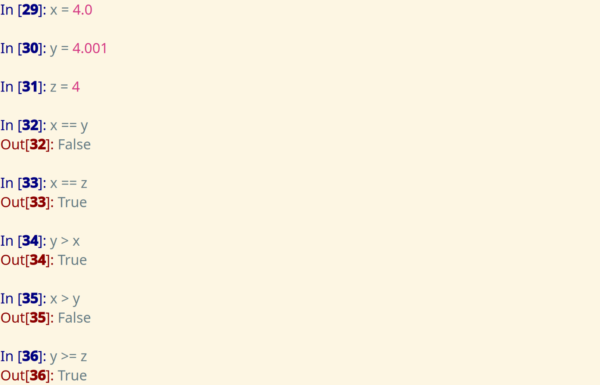
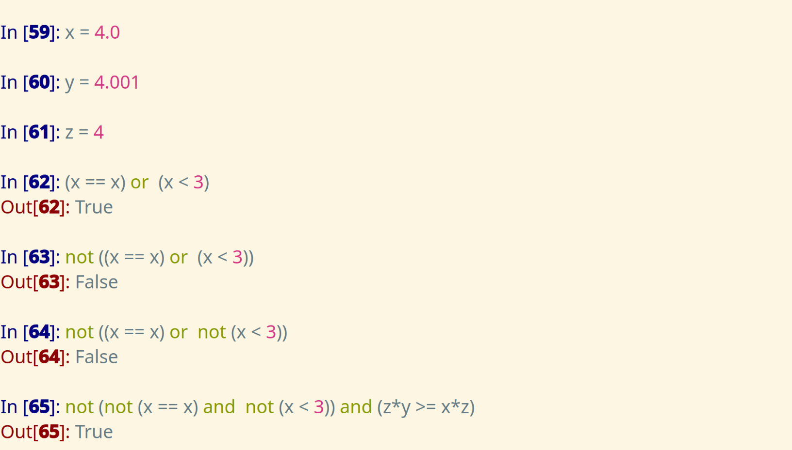
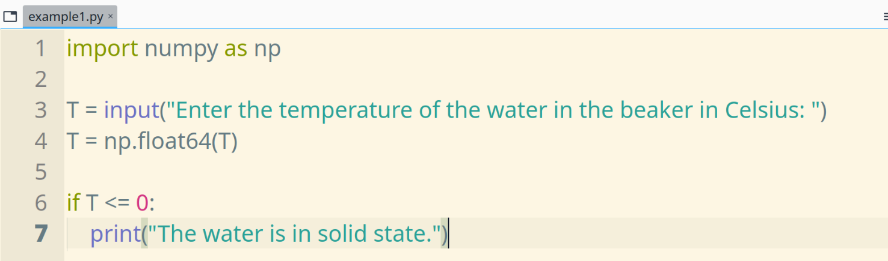
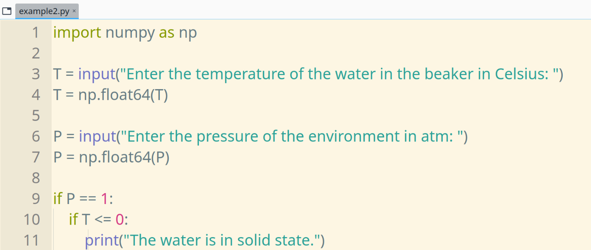
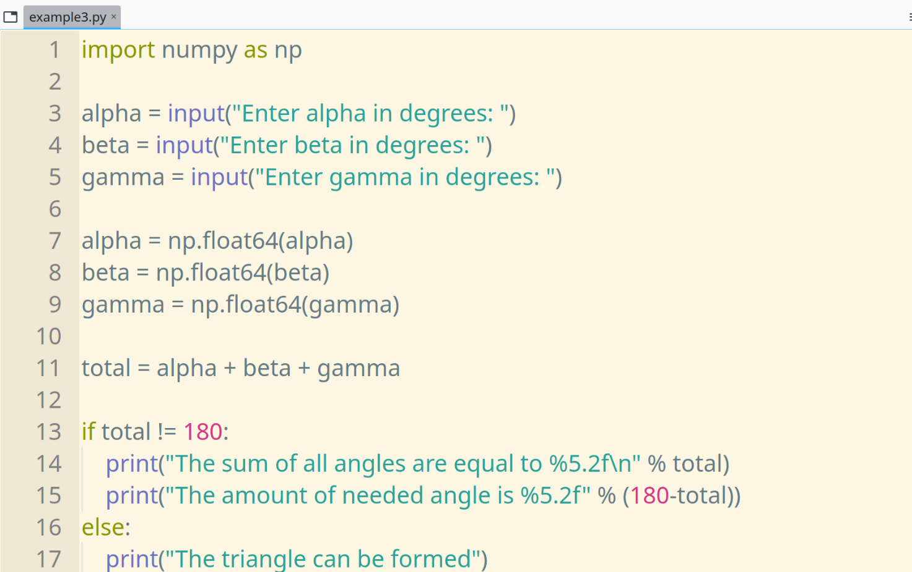
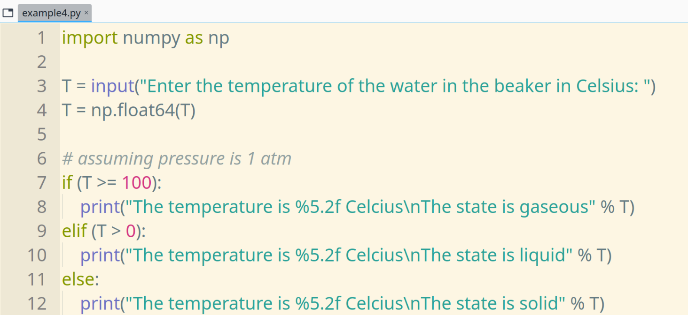

| Name | Operator |
|---|---|
| Greater than | > |
| Less than | < |
| Greater than or equal | >= |
| Less than or equal | <= |
| Equal | == |
| Not equal | != |
Result of the relational operators is a boolean value: True, False

Logical operators are as follows
andornotThey are generally used with booleans.

if conditional
The if conditional is a statement that evaluates a code block when the given condition is satisfied.
if CONDITION:
CODE-BLOCK
else conditional
When the CONDITION is not satisfied, then a code block written under else statement is evaluated,
if CONDITION:
CODE-BLOCK-1
else:
CODE-BLOCK-2
elif conditional
elif comes from (el)se (if)
if CONDITION-1:
CODE-BLOCK-1
elif CONDITION-2:
CODE-BLOCK-2
else:
CODE-BLOCK-3
For example, let's print a physical state if the required condition is true,

We can nest multiple if conditionals to check additional conditions,

Write a program whether a triangle can be formed or not according to the given user input for three angles. If it cannot be formed, then print how much degrees is needed to form the triangle.


Source: https://www.w3resource.com